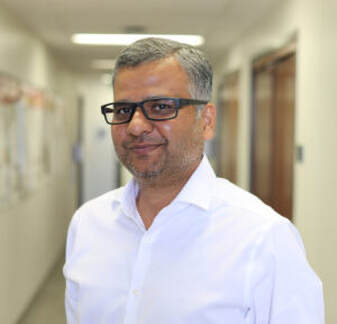
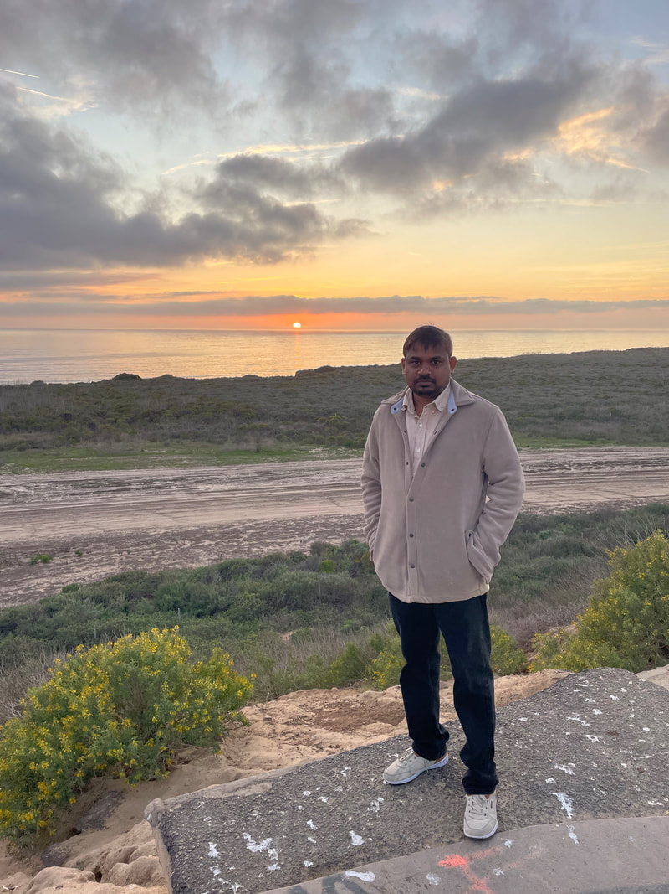
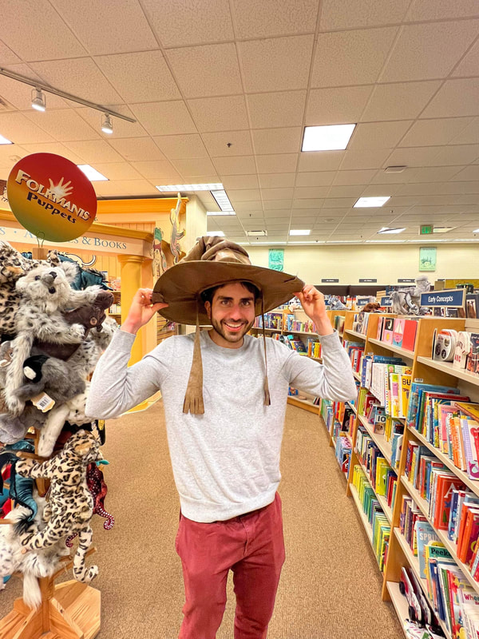
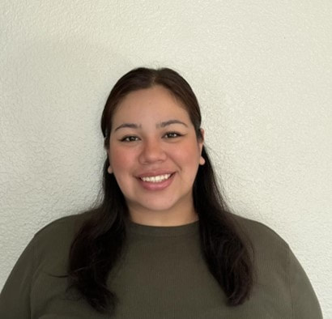
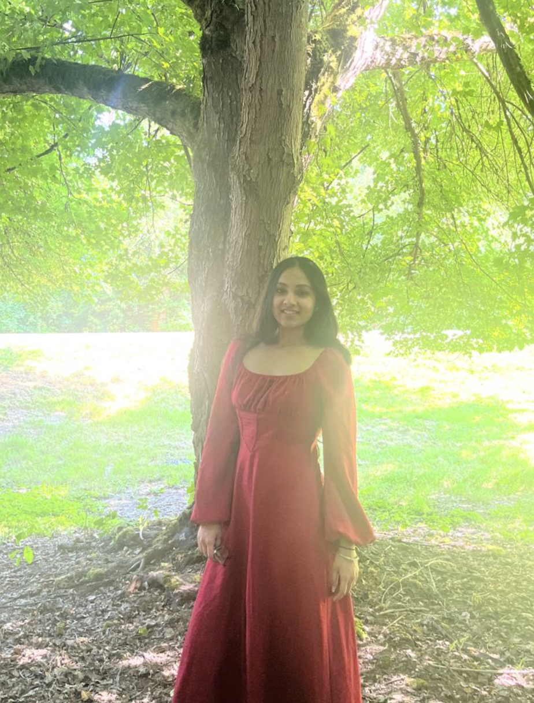
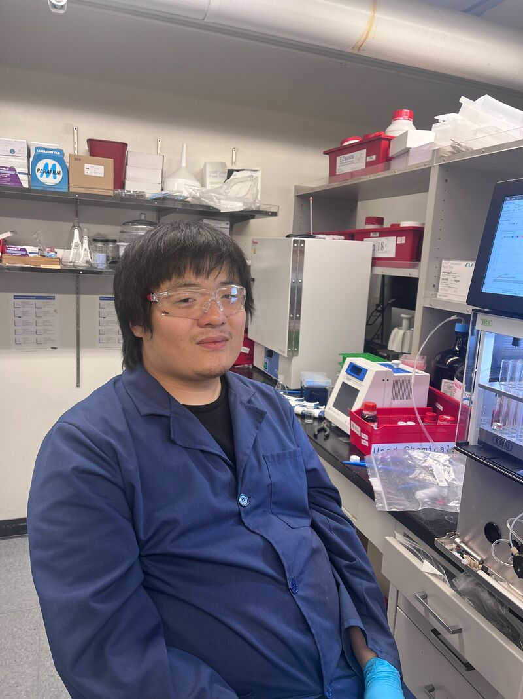
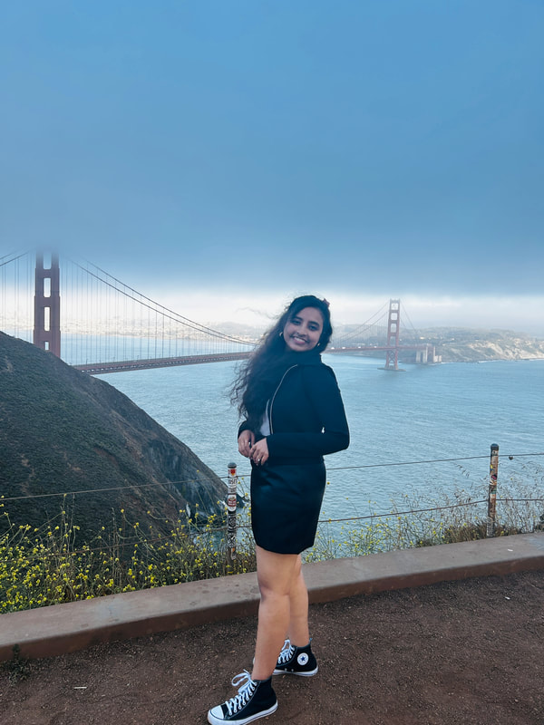
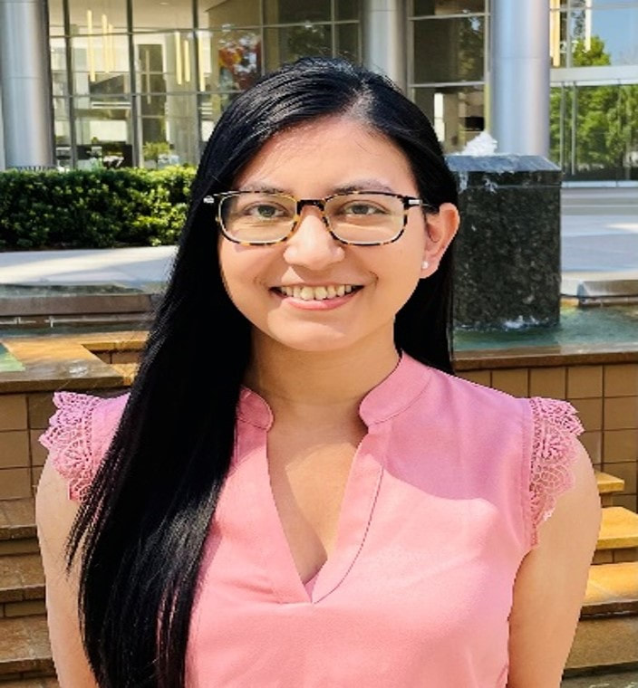
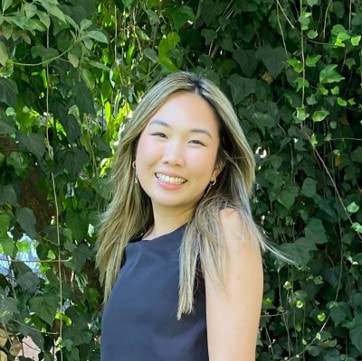

Current Lab Members

SYED K. AHMEDADJUNCT RESEARCH ASSISTANT PROFESSOR OF CLINICAL PHARMACY; ASSOCIATE DIRECTOR, MEDICINAL CHEMISTRY COREPrior to joining USC, I was a Senior Scientist at Southern Research Birmingham, Alabama where I was leading a team of medicinal chemists in drug discovery division, my research focused on the development of antiviral compounds in collaboration with The University of North Carolina at Chapel Hill, Vanderbilt University, Nashville, TN, University of Colorado School of Medicine, University of Alabama Birmingham, and Oregon Health & Science University, Beaverton, Oregon, during this time we have discovered promising lead compounds for SARS-CoV-2, and a range of Alphavirus, which was protected through US-patent applications. This work was also presented at ICAR and obtained Young Investigator award. I earned my Ph.D. in Organic Chemistry from the Indian Institute of Chemical Technology in 2008. When I am not in the lab, I enjoy spending time with my family and playing cricket!

JANAKI RAMULU BIJJAPOSTDOCTORAL SCHOLAR/RESEARCH LAB SPECIALISTHi, I am Dr. Janaki Ramulu Bijja working as a Research Lab Specialist with Dr. Ahmed here at the Medicinal Chemistry Core. My major focus is to develop small molecules for various therapeutic targets. Prior to joining Dr. Ahmed’s group, I was a Research Associate at Michigan State University with Dr Jinda Fan, department of IQ where I got experience in synthesis of bio-active organic compounds and radiolabeling for PET-tracer development. During my first postdoctoral studies, I had the chance to work on natural product chemistry under the supervision of Dr. Subhash Ghosh CSIR -IICT Hyderabad, from where I did my Ph. D at Banaras Hindu University, India.

NADER MOSTOWFIPHD STUDENT, USC MANNI joined Syed’s lab as a Master’s student and had an amazing experience, so I decided to stay as a PhD student in Neuromedicine. My work explores drug discovery in the Alzheimer’s field in a collaboration project with Paul Seidler’s lab. Outside of the lab, I like to spend my time at the gym or playing tennis. In my downtime, I like to watch tv shows with friends and go out to concerts . My favorite concert ever is easily Duran Duran which I saw last year. My goal for this upcoming year is to continue to learn in my PhD while also explore more of the amazing scenery LA has to offer.

BLISS AGUIRREPHD STUDENT, USC MANNBliss Aguirre is a third-year graduate student at USC, working with Dr. Paul Seidler and Dr. Ahmed, studying small molecule inhibitors against tau fibril formation in Alzheimer’s disease. In Dr. Seidler’s lab, and at Dr. Ahmed’s lab she is focusing on Design and Synthesis of novel small molecules to target and decrease tau aggregation in AD brain. She received her undergraduate degree in Biochemistry and minor in Forensic Science from California State University, Los Angeles. Her main research interests revolve around drug design, development, and neurodegenerative diseases. If she is not in the lab or class, you can usually find her reading a book, playing with her cats, or playing sudoku.

DHANVI GAJJARMASTER'S STUDENT, USC MANNI am a Masters student in Pharmaceutical Sciences at USC and Research Assistant working under Dr. Syed Ahmed in the Medicinal Chemistry Core. My research focuses on discovery and early development of small-molecule therapeutics, including CALPAIN-2 inhibitors for pulmonary injury, cGAS–STING antagonists targeting neuroinflammation in Alzheimer’s disease, TSPO-directed scaffolds for antifibrotic activity in MASH and a peptide-based oncology effort. I combine structure-guided design and docking with synthesis, purification and analytical characterization and support ADME, PK decision-making. I work closely with collaborators across University of Alabama, USC Mann School Dean’s Laboratory and UC Davis to drive cross-disciplinary progress from concept to preclinical validation. In my leisure time I enjoy cooking different cuisines, travelling and watching movies.

TIANYI(TIMOTHY) XIAMASTER'S STUDENT, USC MANNI am a second-year Master’s student in Dr. Ahmed’s Medicinal Chemistry Lab. My research focuses on designing and synthesizing novel anti-HSV (Herpes Simplex Virus) agents. Before this, I completed my Bachelor’s degree in Physiology with a minor in Japanese at Michigan State University.
former Lab Members

AISHWARYA JAGADISHMASTER'S STUDENT, USC VITERBI SCHOOL OF ENGINEERINGI am a Master’s student majoring in Computer Science at USC and the Lab Manager in the Medicinal Chemistry Core Lab. I manage and maintain computational tools such as StarDrop, ensuring functionality and efficiency. I also support lab operations by maintaining the chemical inventory, processing supply orders, tracking synthesis-related expenses and preparing monthly invoices and budget analyses for collaborators. My academic and research background lies in artificial intelligence and machine learning, with a focus on applying computational methods to healthcare and scientific discovery. I have worked on projects spanning early Alzheimer’s detection using deep learning, image-based diagnostic systems for bacterial classification, Retrieval-Augmented Generation pipelines for research and predictive modeling in healthcare outcomes. Outside of academics, I enjoy dancing, traveling and discovering new movies and music.

DIANA ESMERALDA INGLESLAB MANAGER/RESEARCH LAB TECHNICIAN IIHi, I’m Diana. I completed my bachelor’s degree in chemistry with a minor in biology at the University of North Carolina at Wilmington. In undergrad, I worked in a medicinal chemistry lab as a lab assistant, synthesizing the core of a natural product, Nakadomarin A. This natural product is isolated from marine sponges off the coast of Okinawa and its derivatives contain potential medicinal and therapeutic properties. After finishing my degree, I moved across the country to Los Angeles where I started an internship at USC called Bridging the Gaps at Keck School of Medicine. I worked in Dr. Hussein Yassine's lab making precursors of 18F-DHA for brain uptake mice studies and lipid analysis through ion-mobility. 1.5 years later, I found Dr. Syed’s work from a research fair very interesting as the only medicinal chemistry lab at HSC and kept pursuing my small molecule synthesis interest and even growing a new interest, Analytical Chemistry/Instrument Management. Beyond academia, I immerse myself in nature and travel, doing acroyoga at the beach, camping at national parks and exploring countless waterfall hikes LA has to offer.

MADHURIMA DASRESEARCH LAB SPECIALISTMadhurima Das, Ph.D. has joined as the Research Lab Specialist in Dr. Ahmed’s Medicinal Chemistry Lab, effective Monday, October 17, 2022. Dr. Das completed her master’s degree in Chemical Biology and Drug Design from the University of Leeds, UK, and has a PhD from the University of New Orleans. She completed her post-doctoral fellowship with Dr. Kenner Rice at National Institute on Drug Abuse (NIDA/NIH). Dr. Das has research experience in synthetic organic chemistry and medicinal chemistry focusing on the synthesis of bioactive small molecules. She may be reached at madhurim@usc.edu

VY NGUYENMASTER'S STUDENT, USC MANNVy Nguyen, MS. has joined the School of Pharmacy as a Master’s Student in August 2022. Vy completed her bachelor’s degree in Pharmaceutical Chemistry at the University of California Davis. Vy joined Dr. Wong-Beringer lab that focuses on infectious diseases. With her current project, Vy aims to incorporate her background in chemistry to learn about potential natural products that can inhibit virulence factors causing diseases with Dr. Wong-Beringer lab and the Medicinal Chemistry Core. Feel free to reach out to Vy at vymnguye@usc.edu
HALINA SANTOSUNDERGRADUATE STUDENTI am currently a third-year student at USC majoring with a B.S. in Pharmacology and Drug Development through the School of Pharmacy. After graduating, I hope to go on to pharmacy school and later have a career in the drug discovery industry. I began working in Dr. Seidler's lab in the Spring of 2022. And then in Dr. Ahmed’s Med Chem lab I've been helping Nader Mostowfi with his research on cyclic peptides that could potentially be used as a treatment for Alzheimer's. So far, the experience has been extremely rewarding and a great step to bring me closer to my aspirations in drug development.